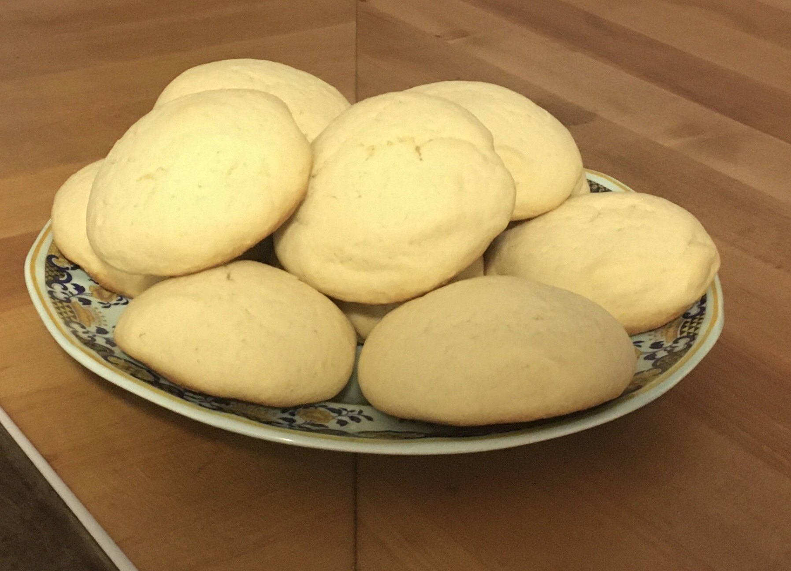

Sugar Cookies

Family traditions are so sweet and so are these cookies! We always make this cookies for Christmas, and its one of Santa’s favorites! The best part is it doesn’t have to be a holiday to make them.
Preheat your oven to 375F. You’ll need two bowls for mixing..
You will need:
- 2 3/4 cups of all purpose flour
- 1 TSP baking soda
- 1/2 TSP baking powder
- 1 cup softened butter
- 1 1/2 cup white sugar
- 1 egg
- 1 TSP vanilla extract
Steps
- In first bowl mix together flour, baking soda, and baking powder.
- In the second bowl cream together the butter and sugar until smooth.
- Beat the egg and vanilla to the butter and sugar.
- Gradually blend the dry ingredients to the butter mixture.
- Roll rounded teaspoon full of dough into ball and place on uncreased cookie sheet.
- Bake for 8 to 10 minutes.
- Let cool for 2 minutes before serving.